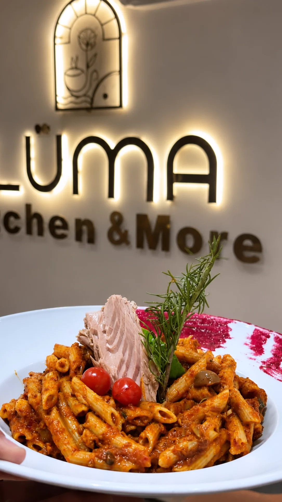
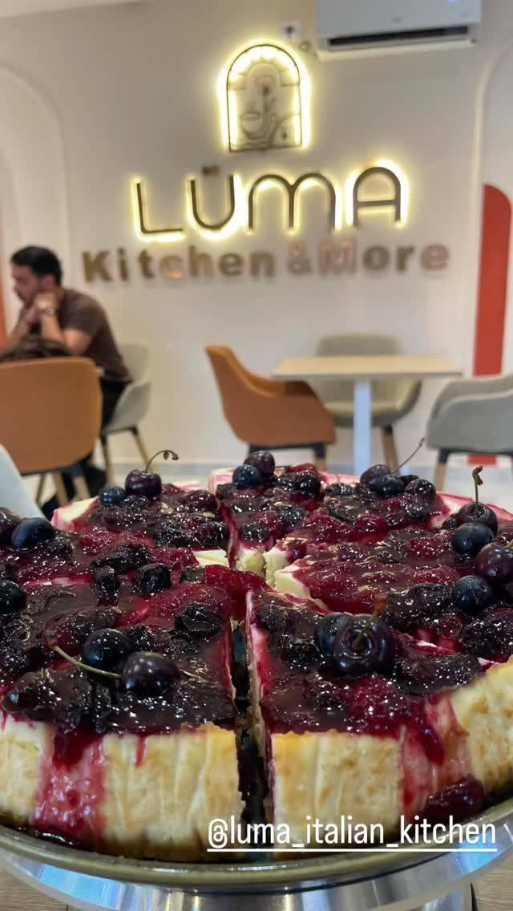
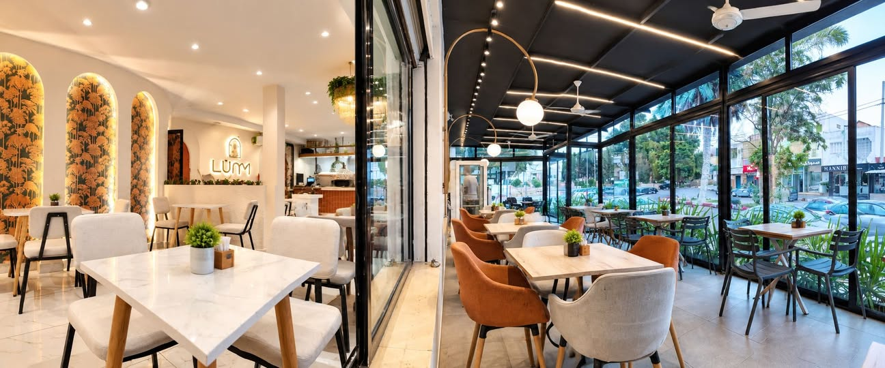

Accueil · Le lieu
Le lieu
LÜMA — Italian Kitchen & More, une adresse au cœur du Kef, entre cuisine généreuse et atmosphère contemporaine.
LÜMA · Le Kef
Une table,
plusieurs envies.
Des crêpes et gaufres aux pizzas, pâtes, plats de fruits de mer, petit-déjeuner et douceurs : la carte couvre toute la journée, du premier café au dernier dessert.

L’identité
Une enseigne lumineuse, une cuisine à partager.
Les photographies originales montrent une salle contemporaine aux tons clairs, un espace salon accueillant et des assiettes dressées avec soin. Cette page s’en tient aux faits documentés : pour toute question sur l’histoire du lieu ou ses horaires, contactez directement le restaurant.

L’ambiance
Un cadre pensé pour profiter du moment.
Tables dressées, douceurs servies et espace salon : découvrez l’univers LÜMA en images, puis passez nous voir avenue Mongi Slim.
Nous trouver ↗Le soir
Le soir,
l’enseigne s’allume.
À la nuit tombée, la façade de LÜMA s’illumine avenue Mongi Slim : un repère simple pour un dîner, une douceur ou un dernier verre au Kef.

Avenue Mongi Slim · Le Kef — le soir